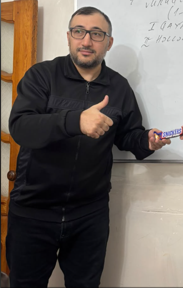

Məntiqi gör
Məsələnin həll yolunu başa düş, düsturun haradan gəldiyini kəşf et.
Riyaziyyata başqa gözlə baxmaq, suallar vermək və hər məsələnin həllinə öz yolunu tapmaq üçün.

Sənan Babayev — riyaziyyatı sevdirərək öyrətməyə çalışan müəllim. Onun üçün dərs yalnız düsturları yadda saxlamaq deyil; düşünməyi, əlaqələri görməyi və həllə inamla addımlamağı öyrənməkdir.
Müəllimlik yanaşmasıRiyaziyyatı addım-addım mənimsəmək üçün əsas olan aydın izah və sərbəst düşünməkdir.
Məsələnin həll yolunu başa düş, düsturun haradan gəldiyini kəşf et.
Mürəkkəb mövzuları kiçik və aydın addımlarla öyrən.
Sual verməkdən çəkinmə, həll etdikcə öz bacarığına inan.
Hər şəkilin yanında kiçik bir hekayə.
Lövhənin yanındakı bu kadr dərs otağının ab-havasını göstərir. Sənan üçün lövhə fikirləri addım-addım çatdırmaq üçün yerdir.
Eynəkli portret müəllimi yaxından tanıdır. Sadə və təbii kadr qalereyaya səmimi bir ovqat qatır.
Bu yaxın plan portretdə diqqət birbaşa müəllimin üzündə cəmlənir. Eynək və təbəssüm şəkilə tanış, mehriban görünüş verir.
Ağ köynəkdə çəkilmiş bu foto müəllimi gündəlik və təbii bir anda göstərir. Arxa plandakı məkan şəklə canlı bir mühit hissi verir.
Gülümsəyən bu kadr müəllimin şən tərəfini göstərir. Səmimi ifadə riyaziyyat dərslərinin də rahat və mehriban keçə biləcəyini xatırladır.
Mavi köynəkdə çəkilmiş bu foto qalereyaya rəng və enerji gətirir. Təbii təbəssüm kadrın diqqət çəkən detalıdır.
Oturarkən çəkilmiş bu kadr daha rahat və qeyri-rəsmi bir anı əks etdirir. Gülümsəyən ifadə şəklə xoş ovqat verir.
Sənan müəllim misala baxır, misal da özünü görməməzliyə vurur. Bir azdan ikisi də razılaşacaq.
Eynək dincəlir, amma müəllimin beynində tənliklər növbəyə düzülüb.
Bir əl havada, o biri eynəyi qoruyur — deməli, vacib düstur gəlir.
Sənan müəllim oturuşunu alıb. İndi yalnız məsələni oturtmaq qalıb.
Axtarışda olan: məchul x. Tapana əlavə bal verilir.
Sənan Müəllim Shokki Mokki çox sevdiyi üçün tapdığı riyazi üsullar və düsturları Şoki üsulu adlandırır.
Sənan müəllim riyaziyyatdan hazırlıq keçir. Məlumat almaq və qeydiyyatdan keçmək üçün zəng edin.
ƏLAQƏ NÖMRƏSİ+994 50 884 78 87Bir məsələ. Bir fikir.
Yeni bir kəşf.